Muestra 1 - Cafetería Café & Origen
Página web funcional y profesional en donde se muestra la identidad del local. Añadí funcionalidades cómo acceso a la ubicación en Google Maps y contacto a redes sociales.
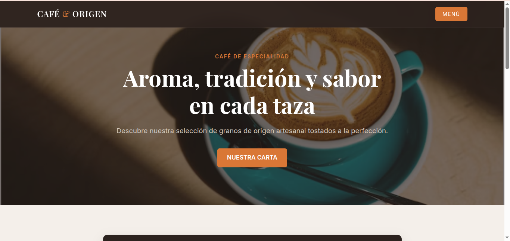
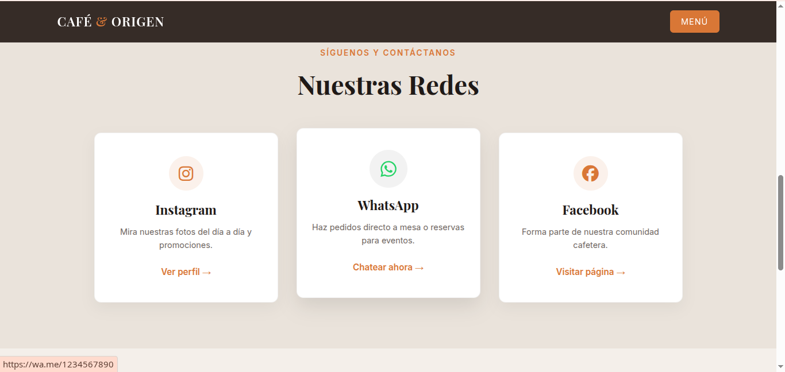
Sitios rápidos y a la medida para negocios de Guadalajara de Buga · desde $200.000
Desarrolladora web (estudiante de Técnico Laboral en Desarrollo Web), enfocada en negocios pequeños de Guadalajara de Buga. Construyo sitios simples y funcionales —menús, formularios de contacto, conexión con las redes sociales del negocio— pensados para que tu negocio se vea profesional en línea sin pagar precios de agencia.
Trabajo directo contigo: tú hablas conmigo, no con un intermediario, y el sitio queda listo en días.
Todo lo que tu negocio necesita para destacar en Internet, libre de relleno y fácil de navegar para tus clientes.
Captura solicitudes y correos directamente en tu Gmail para que los clientes te encuentren sin necesidad de llamarte.
Conexión directa e inmediata para que tus clientes te escriban sin fricción desde su celular.
Cartas digitales dinámicas e interactivas ideales para restaurantes, cafeterías o locales de comida rápida.
Hablamos sobre tu negocio y definimos el contenido exacto.
Construyo tu sitio listo y optimizado en solo unos días.
NOTA: Todas las páginas de muestra son demostraciones ficticias.
Página web funcional y profesional en donde se muestra la identidad del local. Añadí funcionalidades cómo acceso a la ubicación en Google Maps y contacto a redes sociales.


Toque elegante y sobrio para complementar la identidad visual del restaurante. Añadí funcionalidades cómo acceso a la ubicación en Google Maps y contacto a redes sociales.
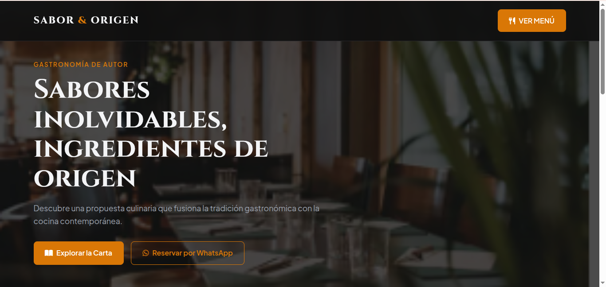
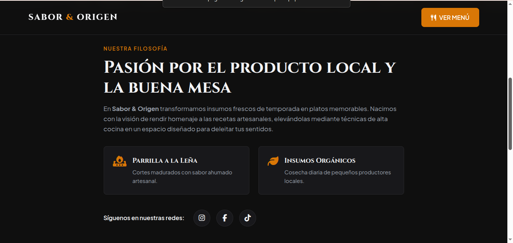
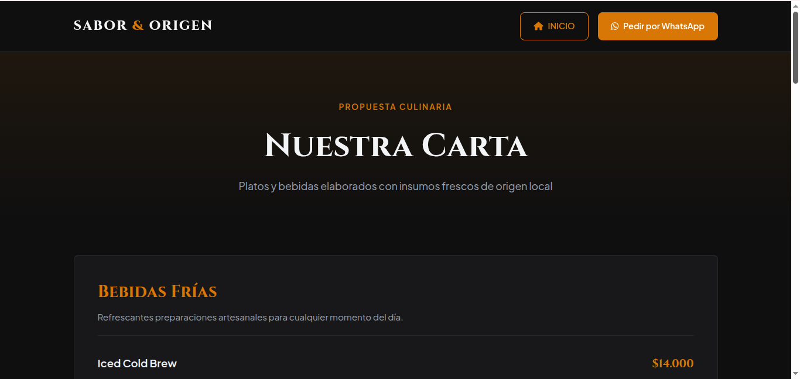
Personificación de un local de comida rápida. Añadí funcionalidades cómo acceso a la ubicación en Google Maps, contacto a redes sociales y menú interactivo.
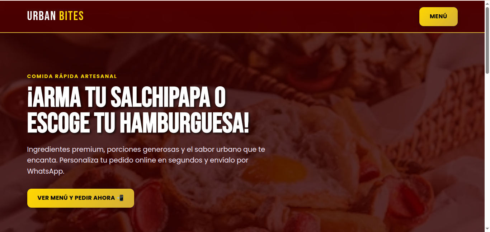
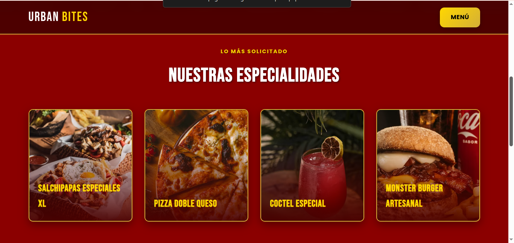
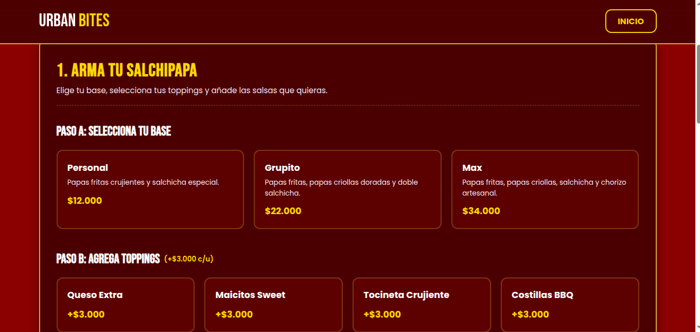
Página web profesional para ofrecer servicios, en este caso de un bufete ficticio de abogados. Añadí funcionalidades cómo acceso a la ubicación en Google Maps, contacto a redes sociales y formulario de contacto por Gmail.
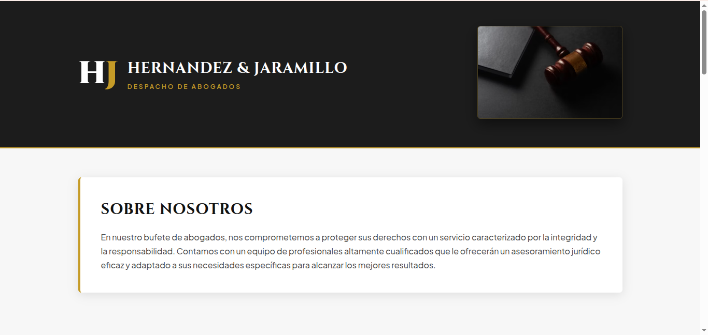
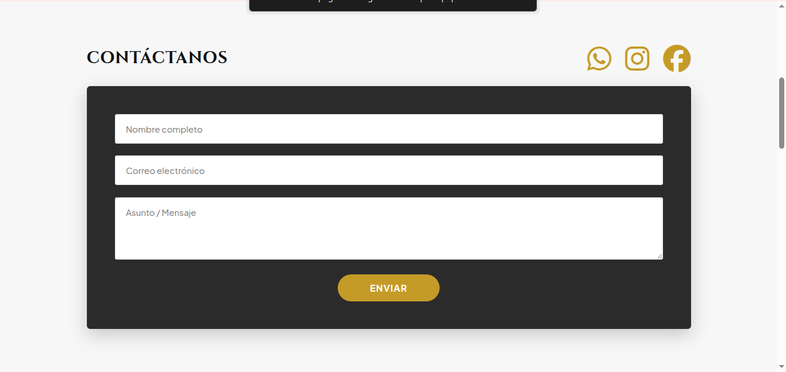
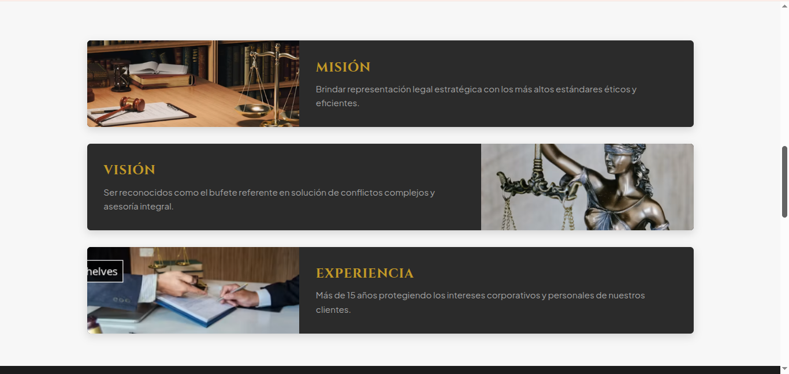